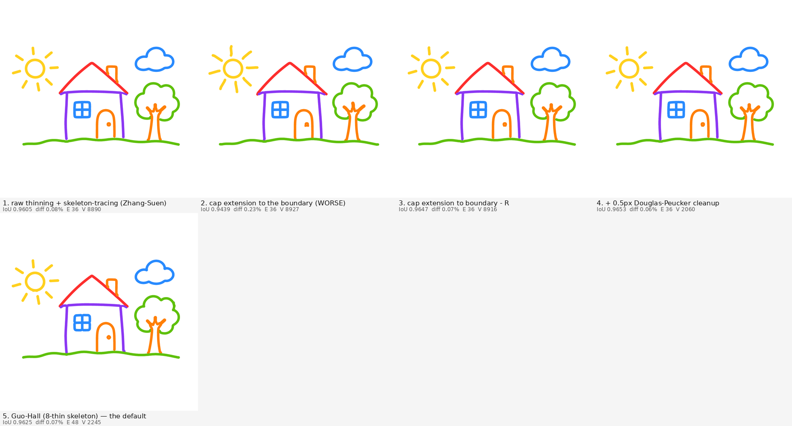

| 1. raw thinning + skeleton-tracing (Zhang-Suen) | IoU 0.9605 diff 0.08% E 36 V 8890 |
|---|---|
| 2. cap extension to the boundary (WORSE) | IoU 0.9439 diff 0.23% E 36 V 8927 |
| 3. cap extension to boundary - R | IoU 0.9647 diff 0.07% E 36 V 8916 |
| 4. + 0.5px Douglas-Peucker cleanup | IoU 0.9653 diff 0.06% E 36 V 2060 |
| 5. Guo-Hall (8-thin skeleton) — the default | IoU 0.9625 diff 0.07% E 48 V 2245 |
